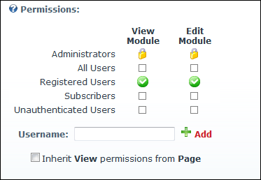
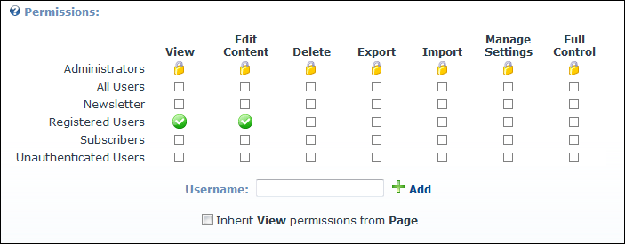
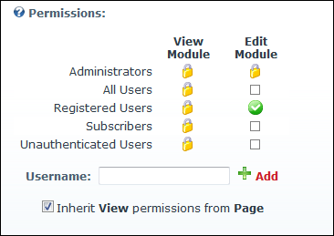
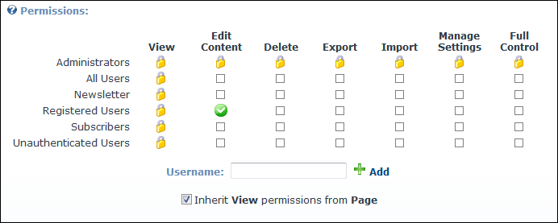
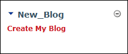

Enabling Users to Create Blogs
How to enable users (including unauthenticated users if desired) and roles to create and manage their own blog.
- Go to the New_Blog module.
-
- Select the Permissions tab.
- At Permissions select one of the following options:
- Option One: Hide the New_Blog module from users who cannot create and manage blogs.
- at Inherit View permissions from Page.
- At View/View Module, select the roles/usernames that are authorized to create a blog.
- At Full Control/Edit Module, select the roles/usernames that are authorized to create a blog.

DNN Platform

Evoq Content
- Option Two: Display the New_Blog module to users who cannot create blogs or need to login to create/manage their blog. This displays the "You must be logged in and have permission to create or edit a blog" to unauthenticated users.
- At Inherit View permissions from Page to allow all users who can view this page to view this module, however only registered users can create their own blog.
- At Full Control/Edit Module, select each role/username that is authorized to create a blog.

Permissions in DNN Platform

Permissions in Evoq Content
-
This displays the Create My Blog link on the New_Blog module.

The Create My Blog link is enabled
-
See "Setting Module Permissions"
-
See "Enabling Bloggers Blog Management Rights"